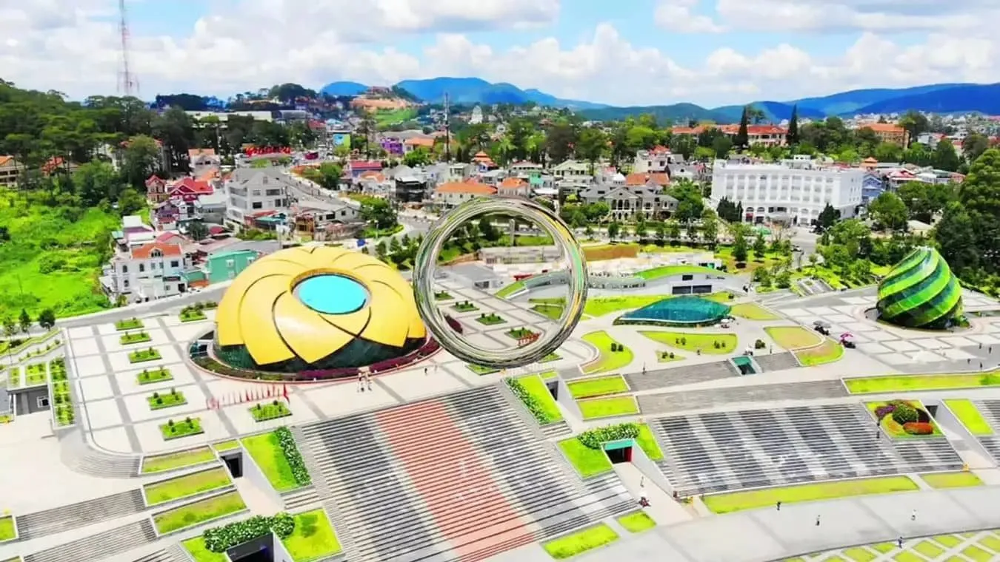
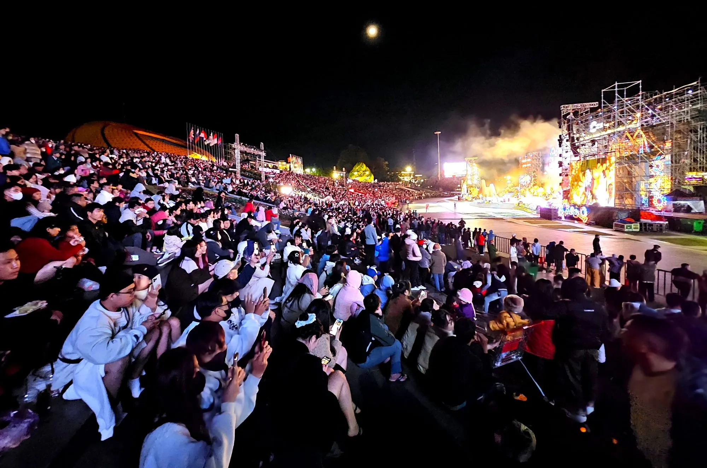
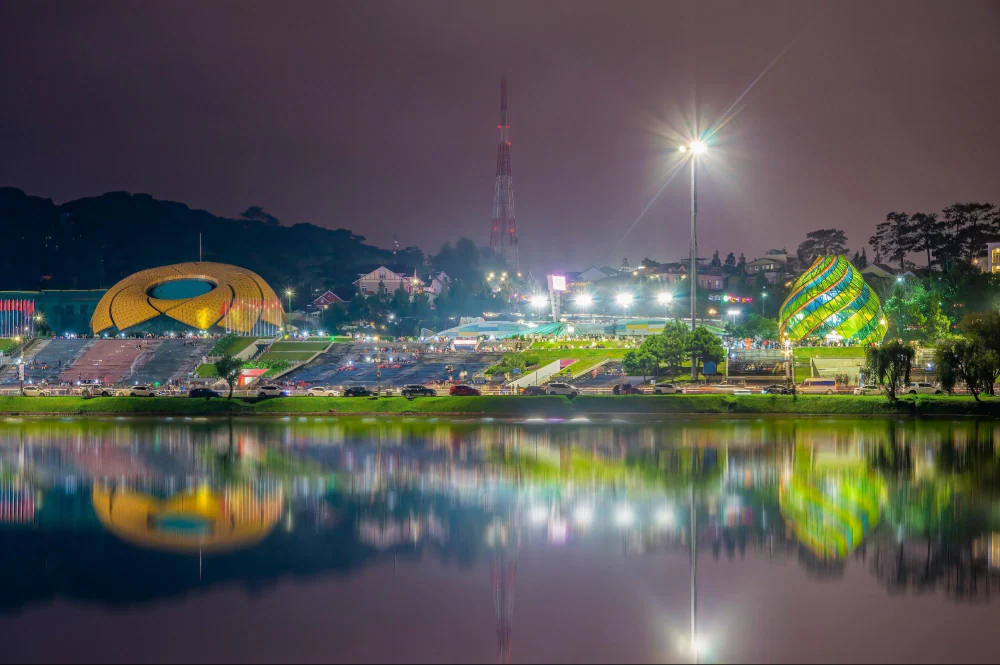
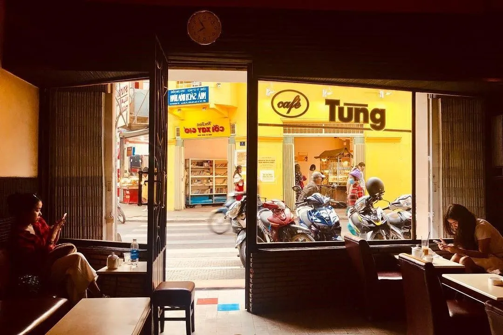
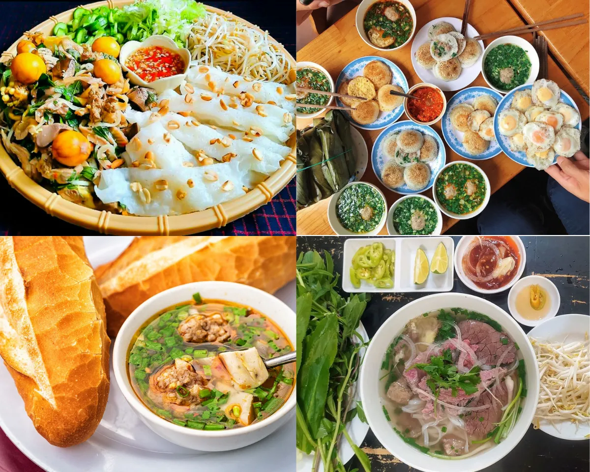

Lam Vien Square - Unique symbol in the heart of Da Lat

Table of Contents
- 1. Lam Vien Square - A brilliant symbol in the heart of Da Lat
- 2. Instructions for moving to Lam Vien Square in Da Lat
- 3. Review What is attractive about Lam Vien Square?
- 4. Lam Vien Square at night - Brilliant beauty that is hard to resist
- 5. Beautiful cafes near Lam Vien Square, Da Lat
- 6. Suggested delicious restaurants near Lam Vien Square, Da Lat
- 7. Attractive tourist destinations around Lam Vien Square
- 8. Cuisine suggestions near Lam Vien Square
When coming to *Lam Vien Square*, you will have the opportunity to experience a series of interesting entertainment activities such as flying kites, rollerblading, playing with bumper cars... In addition, you can also stop at cafes or enjoy grilled rice paper on the side of the square, sipping while admiring the poetic scenery of Xuan Huong Lake and the vast, green space here.
When coming to the dreamy city of Da Lat, visitors will definitely not be able to miss *Lam Vien Square* - one of the unique architectural works and outstanding symbols of the "city of flowers". So where is *Lam Vien Square* located and what is so special about it that attracts a large number of people and visitors? Let's explore the details in the article below!
1. Lam Vien Square - A brilliant symbol in the heart of Da Lat
Address:Tran Quoc Toan Street, Ward 1, City. Da Lat, Lam Dong province
Ticket price:Free
Located right in the city center, *Lam Vien Square* is one of the most famous and attractive check-in spots in Da Lat. Construction began in 2009 and after 6 years of construction, in 2016, the square officially opened to serve residents and tourists.
The highlight that creates the attraction of this place is the unique and modern architectural design, featuring giant glass artichoke buds, stylized wild sunflowers, along with a shopping center, theater and entertainment area in the basement. The square is planned with a total area of more than 72,000m², enough to accommodate up to 60,000 people at the same time - a place where major city events such as *Da Lat Flower Festival*, music and sports programs and vibrant community activities regularly take place.
Not only is it an ideal space for walking and relaxing, Lam Vien Square is also famous for its series of cool virtual living corners. No matter what angle you take, you can easily take photos that are full of dreamy Da Lat, very suitable for young people who love to travel and are passionate about photography.
With completely free ticket prices and convenient location, this is a destination not to be missed when exploring the foggy city.
2. Instructions for moving to Lam Vien Square in Da Lat
With its location right in the city center, finding your way to *Lam Vien Square* is extremely convenient. This place is located on Tran Quoc Toan Street, right next to the shore of the poetic Xuan Huong Lake - one of the familiar routes for tourists when visiting Da Lat.
Just move to the city center, then follow the axis Tran Quoc Toanor Ho Tung Mau, when you see the outstanding yellow wildflowers - the unique symbol of the square - you have come to the right place!
3. Review What is attractive about Lam Vien Square?
*Lam Vien Square* is not only a symbolic architectural work of the city but also an ideal destination for fun, entertainment and artistic exploration activities. Below are the highlights that make this place always in the top "must-visit" places in Da Lat:
3.1. Artichoke flower buds – Impressive symbol & legendary check-in point

Designed with a height of more than 15 meters, Artichoke bud is a typical and unique architectural work in the square. The entire structure consists of large steel frames covered with blue and yellow glass, recreating the image of an artichoke flower bud blooming in the middle of a city of flowers.
When night falls, bright light emanates from inside, causing the flower buds to become shimmering and magical, creating an unforgettable scene. Inside the building is a cafe with a chill space, where visitors can relax, sip a cup of hot coffee and enjoy a panoramic view of Xuan Huong Lake in the cold weather of Da Lat.
3.2. Wildflower block - Outstanding architectural work

Another highlight not to be missed is the giant mass of wild sunflowers up to 18 meters high, with a floor area of up to 1,200m²**. The building has a unique curved dome design, simulating a wild sunflower leaning in the wind. The flower petals are fitted with yellow glass and green glass, creating a beauty that is both modern and close to nature.
Inside is a large stage space - where large-scale events, art shows and performances of the city are held.
3.3. Artistic fountain shimmers at night

Evening is the ideal time to enjoy the beauty of the square. The artistic fountain is combined with melodious music to create a relaxing and romantic scene. This is a place many tourists choose to stroll, take photos or simply admire the city in the dim light.
3.4. Da Lat's major cultural festival & event center

Lam Vien Square is the main venue for organizing national and international events in Da Lat. From * Flower Festival , Tea Festival , * Central Highlands Gong Festival * to other cultural and artistic activities regularly take place here. The large, modern space and central location help this place become the "heart" of unique festivals.
3.5. Vibrant entertainment - entertainment area, ideal space for the whole family

Not only is it a place for sightseeing and taking photos, Lam Vien Square also integrates many diverse entertainment facilities:
-
Big C Supermarket, serving shopping needs
-
Children's play area, electric cars, roller skating
-
Street food spacewith many attractive snacks such as grilled rice paper, skewers, hot soy milk...
In the evenings here, it is often very crowded and bustling, but still retains the typical romance of Da Lat - where you can enjoy memorable moments with family and friends.
4.Lam Vien Square at night– Irresistibly brilliant beauty
If during the day Lam Vien Square carries peaceful beauty with an airy, green landscape, then when night falls, this place seems to transform into a completely different space: shimmering, magical and full of vitality.
Light from works such as Artichoke flower buds, Wild sunflowers and artistic fountains combined with gentle music create a wonderful relaxing space. This is the ideal time for you to stroll around Lam Vien Square, breathe fresh air, watch the city light up and save "extremely chill" moments with relatives and friends.
The atmosphere in the evening at Da Lat's Lam Vien Square is often extremely bustling. Many street activities, musical performances, games and vibrant sidewalk cuisine make this place an ideal stopover after a long day of exploring the dreamy city.
5. Beautiful cafes near Da Lat Lam Vien Square
After walking around Lam Vien Square, you can visit some cafes near Da Lat Square to relax and enjoy the typical coffee flavor of the mountain town. This is also an opportunity to enjoy beautiful views, quiet space and "hunt" for cool virtual living corners.
Below is a list of cafes located near Lam Vien Square that are highly appreciated by tourists:
-
Sunshine Coffee DaLat– No. 9 Tran Hung Dao Street, Ward 10, City. Da Lat
Airy view, diverse drinks, suitable for working or relaxing.
-
Phe La– No. 7 Nguyen Chi Thanh, City. Da Lat
Stands out with unique milk teas, fruit teas and modern designs.
-
Doha Cafe Restaurant & Bar– No. 2 Tran Quoc Toan Street, Ward 10, City. Da Lat
Located right inside the artichoke bud project - the symbol of Lam Vien Square, very convenient and has a beautiful view of Xuan Huong Lake.
-
Café Tung– No. 6 Hoa Binh Area, Ward 1, City. Da Lat
One of the oldest coffee shops, imbued with the nostalgic style of old Da Lat.
No need to go far, right near Lam Vien Square there are many ideal coffee spaces for you to sip delicious drinks and enjoy taking virtual photos.
6. Suggested delicious restaurants near Da Lat Lam Vien Square
After walking around, taking photos and enjoying the cool green space at Lam Vien Square, you will definitely want to recharge your energy with delicious dishes that are authentic to Da Lat. The good news is that around Da Lat Lam Vien Square, there are many famous and delicious restaurants that are highly appreciated by tourists.
Below are some restaurant addresses near Lam Vien Square that you should try at least once:
-
Banh Can Nha Chung– No. 1 Nha Chung Street, City. Da Lat
The banh can is hot, crispy, served with the signature spicy shumai fish sauce.
-
Ba Toa Nha Wood Beef Hotpot– No. 1/29 Hoang Dieu, City. Da Lat
The restaurant is famous for its rich hot pot broth and rustic, cozy atmosphere.
-
Tang Bat Ho wet chicken intestine cake– No. 15F Tang Bat Ho, City. Da Lat
The unique flavor with rich sweet and sour fish sauce, is a favorite dish of tourists when visiting the area near Lam Vien Square.
7. Attractive tourist destinations around Lam Vien Square
Not only is it a prominent highlight in the city center, *Da Lat Lam Vien Square* is also located near many other famous tourist attractions. After checking in to your heart's content at The Square, you can continue your journey of discovery with the following destinations:
7.1.Da Lat Night Market

Just a few minutes walk from *Lam Vien Square*, *Da Lat Night Market* is a nightlife shopping and dining paradise. The bustling atmosphere, colorful stalls and the delicious aroma of street food will definitely make you fascinated.
7.2.Chicken Church

Located not far from Da Lat's Lam Vien Square, Chicken Church is a prominent destination with classic Roman architecture and characteristic pink walls, very popular with tourists who love ancient European style.
7.3.Da Lat City Flower Garden

One of the tourist attractions near Lam Vien Square that cannot be missed is *City Flower Garden*. This is where thousands of colorful flower species are displayed and is an ideal place for you to relax, take photos, or learn about flower varieties typical of cold countries.
7.4.Bao Dai Palace

Only a few minutes away from Lam Vien Square, *Bao Dai Palace* is a historical attraction. Exquisite architecture, ancient French style and cool green space make this place an interesting cultural check-in point for all visitors.
8. Cuisine suggestions near Lam Vien Square
After walking around and taking photos at *Lam Vien Square*, don't forget to stop by *Xom Leo Grill & Chill Shop* - a delicious restaurant near *Lam Vien Square Da Lat* that is loved by many diners. The restaurant impresses with its cozy space, sunset view, passing trains, diverse menu of attractive grilled dishes and enthusiastic service team, which will definitely bring you a memorable culinary experience in the heart of Da Lat.
📌Address:113 Huynh Tan Phat, Ward 11, Da Lat, Lam Dong 67000
📌Inbox:Here
📌Google Maps:See Directions
📌Hotline:076.45.27.336 – 08.99.42.84.34 – 0902.91.22.40
Lam Vien Square is not only a unique architectural symbol of Da Lat city but also an ideal destination for having fun, taking photos and enjoying the chilly atmosphere typical of the land of thousands of flowers. After a day of exploring beautiful virtual living corners and participating in exciting activities at the square, don't forget to visit Xom Leo Grill & Chill Shop near Lam Vien Square to recharge your energy. The cozy space and attractive menu here will definitely be the perfect ending for your emotional journey to Da Lat.